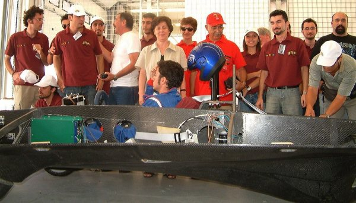
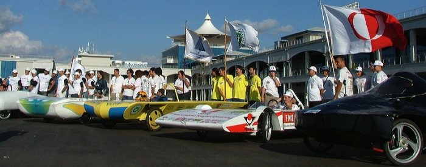
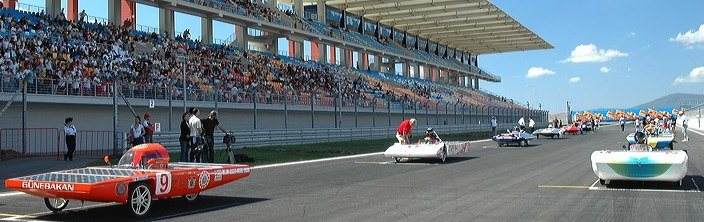
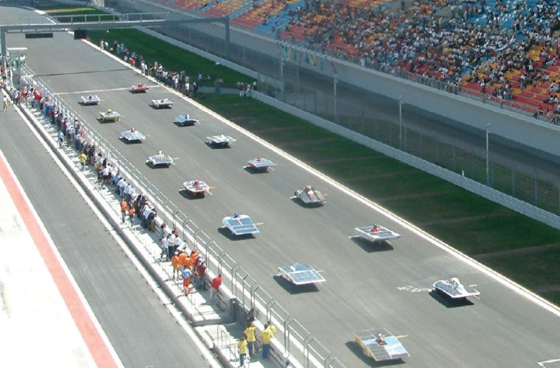
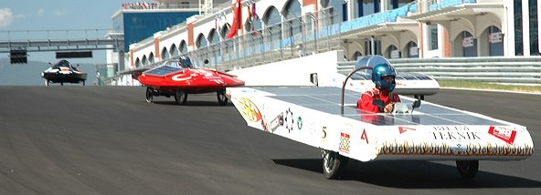
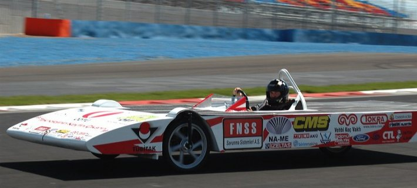
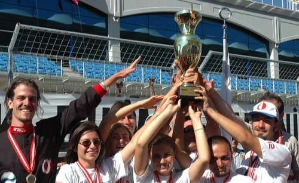

|
30
Aðustos 2005 Salý günü Formula 1 yarýþlarýnýn yapýldýðý Ýstanbul
Park'taki 5.3 kilometrelik pistin 4km'lik bölümünde yapýlan
bu yarýþ ayný zamanda F1 pistinde düzenlenen Dünya'daki ilk
güneþ arabalarý yarýþý olma özelliðini de taþýyor.
TÜBÝTAK
tarafýndan organize edilen yarýþ, güneþin en tepede olduðu
saat 12:00'de Ýstanbul Park'ta baþladý. Ýlk turda sekiz araç
zorlu yokuþlarý çýkamayýnca yarýþý terk etmek zorunda kaldý.
Dört takým arasýnda geçen yarýþta, sekiz turu da sadece ODTÜ
Robot Topluluðu'na ait MES-e tamamlayabildi...
Yarýþa
katýlan tüm ekipler kazançlý çýktý:
Elde
edilen derece ne olursa olsun, yeni ürün geliþtirme, tasarým
ve imalat konusunda iyi bir ekip çalýþmasý gerektiren bu yarýþmanýn
üniversite öðrencileri, öðretim üyeleri ve sanayiden profesyoneller
arasýndaki iþbirliðini geliþtirmeye ve öðrencilerin erken
yaþlarda tasarým ve ürün geliþtirme tecrübesi edinmelerine
önemli katkýlarý olmuþtur. Yarýþmaya hazýrlanan birçok ekip
tasarým ve modelleme için üç boyutlu CAD yazýlýmlarýndan,
mukavemet, rüzgar direnci vs. gibi hesaplama ve analizler
için ise çeþitli CAE yazýlýmlarýndan faydalanmýþtýr.
Bu
yarýþma, ülkemizde yeni teknolojiler ve ürünler geliþtirecek
ekiplerin çoðaltýlmasý ve desteklenmesi adýna devlet -
üniversite - sanayi iþbirliðinin güzel ve baþarýlý bir
örneðini oluþturmuþtur.

TÜBÝTAK
Baþkaný Prof. Dr. Nükhet Yetiþ, yarýþ öncesi hazýrlýk yapan
takýmlarý ziyaret ederken. Bazý araçlarda gövdenin inþasý
için karbon fiber takviyeli kompozit malzemeler kullanýldý.

Yarýþ öncesi takýmlar ve araçlarý

Yarýþtan kýsa bir süre öce araçlar Fromula 1 pistinde yerlerini
almýþ durumda.


Yarýþ
sýrasýnda çekilen bu fotoðrafta 4 araç bir arada görünüyor
Ortalama
saatte 22,80 kilometre hýz yapan MES-e, Türkiye'nin Formula
G'yi kazanan ilk araç oldu. MES-e, 8 turu da tamamlayabilen
tek araç oldu. Yaklaþýk iki saat süren yarýþta, diðer araçlar
ise yaptýklarý turlara göre derece aldý. Atýlým Üniv. / Hasat
- Atýlým 2., Yeditepe Üniv. / YUGAT ise 3. dereceyi aldý.

Yarýþ sýrasýnda ORT / MES-e. MES-e, 8 turu da tamamlayabilen
tek araç oldu.

Yarýþ sonunda ODTÜ Robot Topluluðu (ORT) takýmý birincilik
kupalarýyla.
|